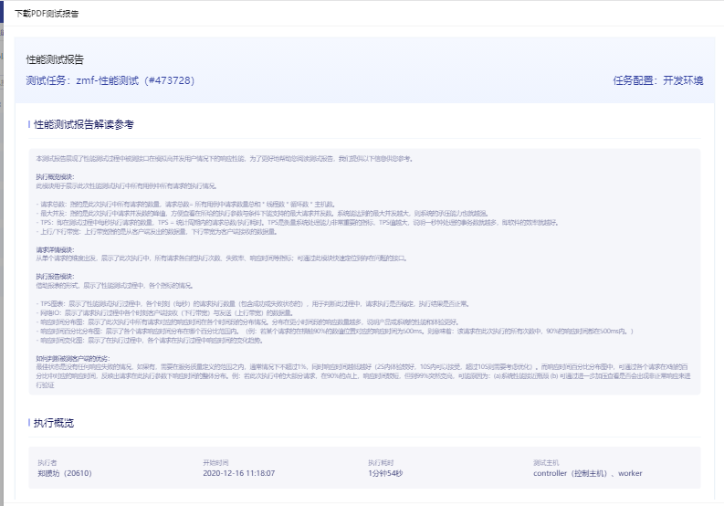
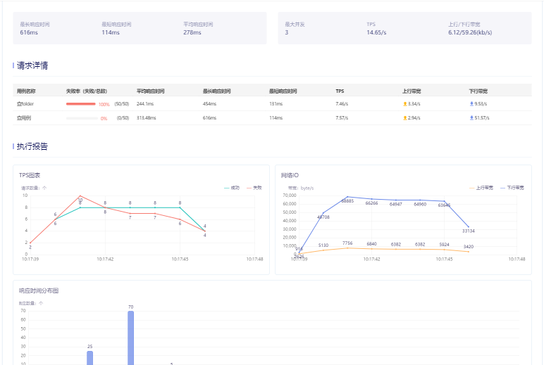
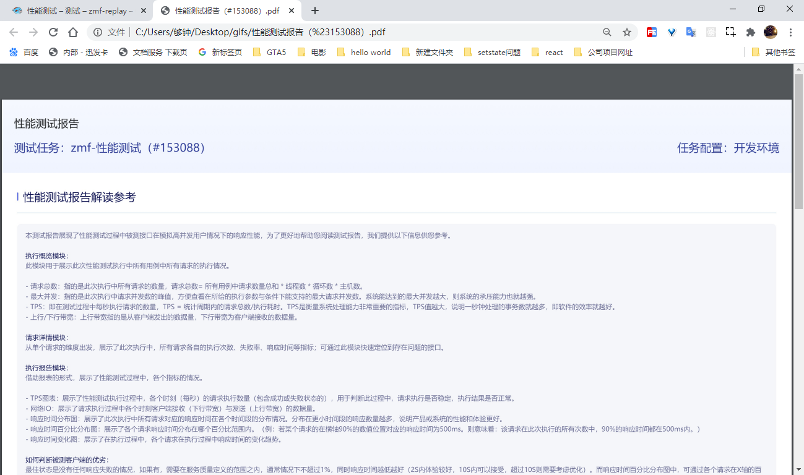
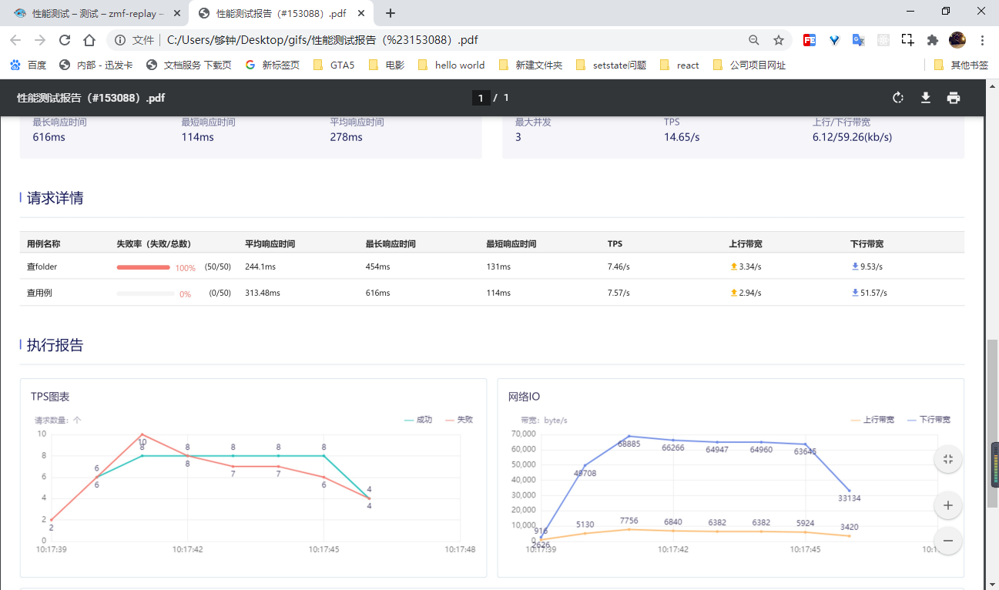
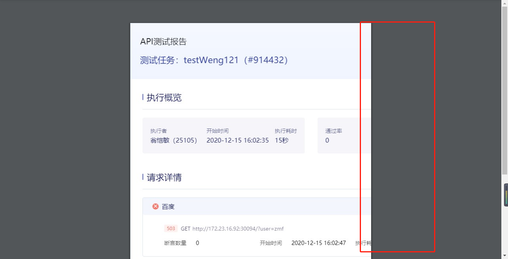

项目上要求，能够根据页面上所展示的测试报告，生成一份pdf。
根据模板：

image-20201226160741507

image-20201226160741507
最终生成的效果：

image-20201226160741507

image-20201226160741507
原理：通过插件js-pdf以及一个html2canvas插件结合，首先通过 html2canvas 可以在浏览器端直接对整个或部分页面进行截屏。脚本通过读取DOM并将不同的样式应用到这些元素上，从而将当页面渲染成一个Canvas图片。 之后利用js-pdf插件添加图片，将生成的canvas图片插入pdf中。 保存导出pdf
1. 获取像素比
/* 根据window.devicePixelRatio获取像素比 */
function DPR() {
if (window.devicePixelRatio && window.devicePixelRatio > 1) {
return window.devicePixelRatio;
}
return 1;
}devicePixelRatio属性是干嘛的
window的该属性能够获取到当前显示设备物理分辨率与css的像素分辨率之间的比率。简单说就是告诉浏览器应该使用多少个物理像素来会在单个css像素。
2. 绘制canvas
首先要看绘制canvas需要的一些参数需要配置
html2canvas(element, options);返回一个promise
1）获取element
const pdfRef = React.useRef();
return (
<div className={`${prefixCls}`} ref={pdfRef}>
......
</div>2) 配置options
const getOpts = ()=> {
const target:any = pdfRef.current;
const width = target.offsetWidth; // 获取dom 宽度
const height = target.offsetHeight; // 获取dom 高度
const scale = DPR();
const tempCanvas = document.createElement('canvas');
tempCanvas.width = width * scale; // 定义canvas 宽度 * 缩放
tempCanvas.height = height * scale; // 定义canvas高度 *缩放
const opts = {
useCORS: true,
allowTaint: true,
canvas: tempCanvas, // 现有的画布元素用作绘图的基础
scale, // 提升画面质量，但是会增加文件大小
scrollX: 0,
scrollY: 0,
};
return opts;
}关于在配置项中设置跨域
useCORS和allowTaint两种都可以设置跨域；
为什么要设置跨域：我们图片一般都是放到静态资源服务器上的，资源服务器地址一般和项目地址是不一样的；虽然图片可以在页面上显示，但是用canvas绘图时却绘制不出来；
3. 根据生成的canvas生成pdf
html2canvas(target, opts).then(async (canvas) => {
(....处理逻辑)
});1）首先转换图片
HTMLCanvasElement.toDataURL()方法返回一个包含图片展示的 data URI
const contentWidth = canvas.width;
const contentHeight = canvas.height;
// 将canvas转为base64图片
const pageData = canvas.toDataURL('image/jpeg', 1);2) 设置pdf的大小以及生成的图片大小
因为pdf的像素单位是不一样的，所以需要进行转换;
已知 1pt/1px = 0.75, pt = (px/scale)*0.75
这里的scale就是上面的像素比
// 设置pdf的尺寸，pdf要使用pt单位 已知 1pt/1px = 0.75 pt = (px/scale)* 0.75
// 2为上面的scale 缩放了2倍
const pdfX = (contentWidth + 10) / scale * 0.75;
const pdfY = (contentHeight) / scale * 0.75; // 500为底部留白
// 设置内容图片的尺寸，img是pt单位
const imgX = pdfX;
const imgY = (contentHeight / scale * 0.75); // 内容图片这里不需要留白的距离3）插入图片并生成pdf
const pdf = new JsPDF('', 'pt', [pdfX, pdfY]); // 第一个参数方向：默认''时为纵向
// 将内容图片添加到pdf中，因为内容宽高和pdf宽高一样，就只需要一页，位置就是 0,0
await pdf.addImage(pageData, 'jpeg', 0, 0, imgX, imgY);
pdf.save(`API测试报告（#${viewId}）.pdf`);4. 出现的问题以及解决方法
1）导出的pdf中图片横向位置被截断
如图：

image-20201226181331163
这是因为需要生成的dom的宽度大于其高度，生成图片插入pdf的时候由于pdf默认设置的是纵向排列，图片会被撑大以适应pdf的高度；
按照下方处理
// 初始化jspdf 第一个参数方向：默认''时为纵向，第二个参数设置pdf内容图片使用的长度单位为pt，第三个参数为PDF的大小，单位是pt
let direct;
if (contentHeight < contentWidth) {
direct = 'l';
} else {
direct = 'p';
}
const pdf = new JsPDF(direct, 'pt', [pdfX, pdfY]);当高度小于宽度的时候将pdf进行横纵向的调整，以适应插入图片的宽高